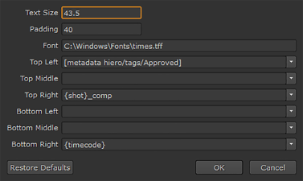

Nuke 工作室 可以在导出过程中使用简单的 Nuke gizmo 刻录文本。Gizmo 可以从 核写入节点 预设的 内容 面板下 烧入 .
Gizmo 包含字体样式和表示文本位置的字段的控件。您还可以使用刻入软效果直接在时间轴上添加刻入。请参阅 软效果 欲了解更多信息。
注意: 的 字体 字段仅接受要使用的字体文件的完整文件路径和名称。例如，在 Mac OS X ~/Library/Fonts/Verdana.ttf 上
单击 编辑 显示可用的控件。

您可以混合匹配以下方法来创建刻录文本:
• 手动输入文本，你看到的是你在刻录中得到的。
• 使用快照模板中有效的任何令牌作为刻录令牌。例如:
{Shot} _ comp
从时间轴中提取快照 nam 并附加 _ Comp .
请参阅 使用本地和项目预设 欲了解更多信息。
• 使用应用于剪辑和剪辑实例的标记中的元数据。例如:
[元数据 hiero/标签/已批准]
从剪辑或剪辑实例中提取允许的标记。您也可以附加 注意 要包括与标记关联的任何注释:
[元数据 hiero/tags/Approved/note]
注意: 必须在标记名称中的空格和斜杠前面加上 \ \ (反斜杠) 才能启用 Nuke 工作室 正确处理标记名称。例如: [元数据 hiero/tags/Blue \ \ Screen/note]
提示: 如果您不确定剪辑实例上有哪些元数据键和值，您可以添加包含 Tcl 表达式的文本软效果 [元数据值] 在查看器中显示所有元数据。请参阅 软效果 欲了解更多信息。
|
|